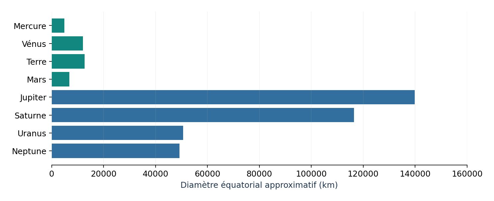

5′
1. Je m’interroge
Un élève affirme : « La Terre est habitable parce qu’elle est à la bonne distance du Soleil, c’est tout. »
La distance au Soleil suffit-elle à expliquer la vie sur Terre ?
Je vais comparer plusieurs planètes pour trouver les conditions qui rendent la Terre favorable à la vie.
Objectif : Je vais comparer plusieurs planètes pour trouver les conditions qui rendent la Terre favorable à la vie.
Je réussis si : J’utilise au moins deux données du tableau pour justifier ma réponse.
Un élève affirme : « La Terre est habitable parce qu’elle est à la bonne distance du Soleil, c’est tout. »
La distance au Soleil suffit-elle à expliquer la vie sur Terre ?
Lis le tableau ligne par ligne.
| Planète | Distance au Soleil (UA) | Température moyenne de surface | Atmosphère | Eau liquide en surface |
|---|---|---|---|---|
| Mercure | 0,39 | de −180 °C (nuit) à 430 °C (jour) | presque aucune | non |
| Vénus | 0,72 | environ 465 °C | très épaisse (dioxyde de carbone) | non |
| Terre | 1 | environ 15 °C | azote et oxygène | oui |
| Mars | 1,52 | environ −60 °C | très mince (dioxyde de carbone) | non (glace) |
La Terre réunit de l’eau liquide, une atmosphère et des températures favorables à la vie que nous connaissons. La distance au Soleil compte, mais plusieurs conditions interviennent ensemble.
Mots-clés : atmosphère, eau liquide, température moyenne, conditions de vie, donnée

La Terre possède de l’eau liquide à sa surface, une atmosphère et des températures moyennes d’environ 15 °C, compatibles avec la vie que nous connaissons. Sa distance au Soleil compte, mais elle ne suffit pas : Vénus est plus éloignée du Soleil que Mercure, et pourtant elle est plus chaude, à cause de son atmosphère très épaisse. Mars est plus loin et très froide, avec une atmosphère très mince. Nous ne connaissons la vie que sur Terre ; ne pas en avoir trouvé ailleurs ne prouve pas qu’elle est impossible.
Fiche de connaissances : Qu’est-ce qui rend la Terre favorable à la vie ? →
Réponds à l’élève de la situation en trois phrases, en citant des données du tableau.
Ce que je dois produire : Réponse argumentée de trois phrases.
Matériel : Tableau de données.
Commence par : « Tu as en partie raison, mais… ».
| Essai | Ce que je teste | Résultat (avec l’unité) | Décision |
|---|---|---|---|
| 1 | |||
| 2 | |||
| 3 |
J’écoute, j’explique mes choix et j’accepte de changer d’avis quand les preuves l’exigent.
Objectif : Comparer des conditions (eau liquide, atmosphère, température) ; montrer que la distance au Soleil ne suffit pas.
Déroulé : S’interroger 5 min ; Enquêter 15 min ; Retenir 7 min ; Agir 13 min ; Bilan 5 min.
« En partie seulement : Vénus est plus loin du Soleil que Mercure mais elle est plus chaude (465 °C) à cause de son atmosphère épaisse. La Terre réunit aussi de l’eau liquide et une atmosphère d’azote et d’oxygène. »
Point de vigilance : Éviter « Mars est une planète morte » : on dit que la vie n’y a pas été trouvée. La séance prépare le parcours : la Terre y aura un panneau « habitabilité ».